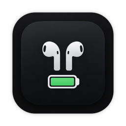

Both buds. And the case.
A quick click reveals individual battery levels, including the case when macOS reports it.
A LITTLE UTILITY FOR YOUR MAC
A little more battery clarity.
A lot less breaking your flow.
A closer look at your menu bar. Interactive preview with example readings.
FIFTEEN SECONDS
JUST ENOUGH. JUST RIGHT.
Everything you need to keep listening.
Nothing to pull you out of the moment.
Both percentages, the lowest bud, or simply two little capsules. Choose how much you see.
A quick click reveals individual battery levels, including the case when macOS reports it.
Launch at login, connect your AirPods, and get on with your day. No Dock icon to work around.
Built-in update checks bring new releases to you. You choose when to download and install.
LESS, BUT CONSIDERED.
A utility should earn its place in your menu bar.
And ask very little in return.
Built with Swift, AppKit, and SwiftUI. About 2.5 MB to download, for Apple silicon and Intel.
No accounts. No analytics. Battery readings stay on your Mac. Update checks connect to GitHub.
Checks periodically, pauses during sleep, and creates its popover only when you open it.
A FEW DETAILS
Small app. Straight answers.
PodsBar requires macOS 14 Sonoma or later and runs on both Apple silicon and Intel Macs. Connect your AirPods to your Mac to see their battery levels. AirPods Max and other headphones with a single battery show one reading.
Download the ZIP, unzip it, and move PodsBar.app to your Applications folder. Open the app and look for the two little capsules in your menu bar. You can enable “Launch at login” in the popover.
A note on the current release: version 1.1.0 is ad-hoc signed and has not been notarized by Apple. macOS may block its first launch. See the release notes before downloading.
PodsBar displays the readings macOS provides. Case battery levels can be unavailable or out of date, especially while the case is closed. A dash means macOS hasn’t provided a reading.
PodsBar uses Sparkle to check GitHub for updates daily. By default, it asks before downloading and installing. You can turn automatic checks off, or select “Check for Updates…” at any time in the app.
If you have an older version without the updater, download 1.1.0 manually once. Future updates can then arrive through the app.
Yes. PodsBar is free and open source under the MIT license. No subscription, sign-up, or account. You can explore the code, report an issue, or contribute on GitHub.

A LITTLE CLARITY GOES A LONG WAY.
Your AirPods battery, right where you need it.
Download for Mac Not yet Apple-notarized. Read the installation note